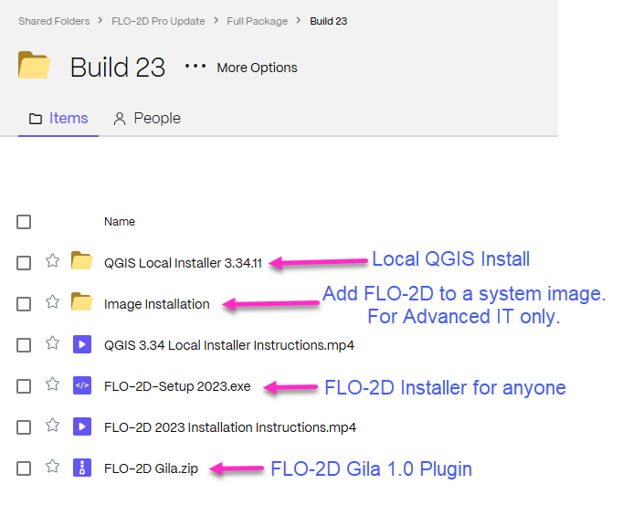

FLO-2D Pro Install Instructions
FLO-2D is a flood routing model that simulates river, alluvial fan, urban and coastal flooding. The model can tackle any diverse flooding problem including:
River overbank flooding
Watershed rainfall and runoff
Urban flooding with street flow, flow obstruction and storage loss
Overland tsunami/hurricane surges
Storm drain modeling
Mud and debris flows
Unconfined alluvial fan flows
Surface and groundwater interaction
Dam and levee breach
Tailings dam failure and volume prediction
Flood insurance studies
Step 1: Download the Software
FLO-2D Pro Subscribers should log into Sharefile and download the software and activator from their FLO-2D Tech Support Account.
The sharefile folder contains the files and instructional videos needed to install FLO-2D Build 23.
Step 2: Run the Installer
Install FLO-2D using the following instructions. Admin Rights Required.

Right click zipped file to access properties.
Unblock the file if necessary.

Double click the Setup file to run the installer.
If FLO-2D is already installed, this installer will remove the FLO-2D Pro folder and rename the FLO-2D Documentation folder.

Check all options and click next.

Click Next and Install to run the installer.
The Microsoft Visual C++ redistribution packages are embedded in the FLO-2D installer. They install passively, but may request a restart.
Step 3: Run the Activator
The activator is stored in the FLO-2D.ShareFile.com account. It requires Admin Rights to run.
Download and run the activator.

Activation lasts 1 year past the purchase date.

FLO-2D uses a site license. It can be installed and activated on any computer in the office that holds the license. The license agreement is saved to the Documentation folder along with the rest of the FLO-2D Documentation.
C:\users\user\public\documents\FLO-2D Pro Documentation